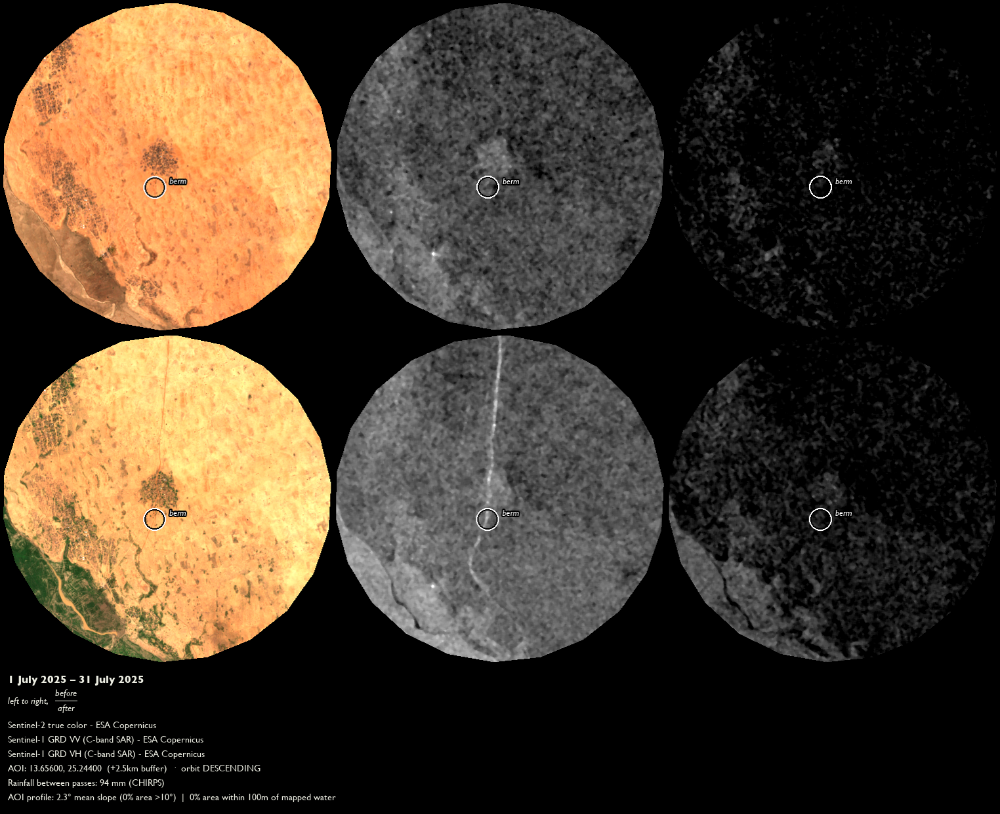
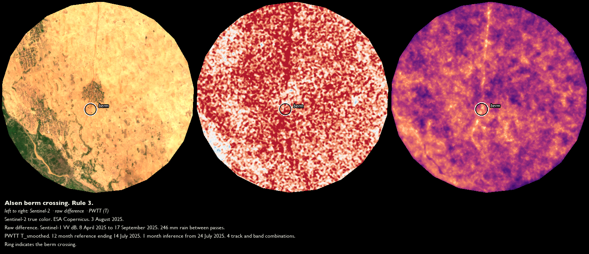
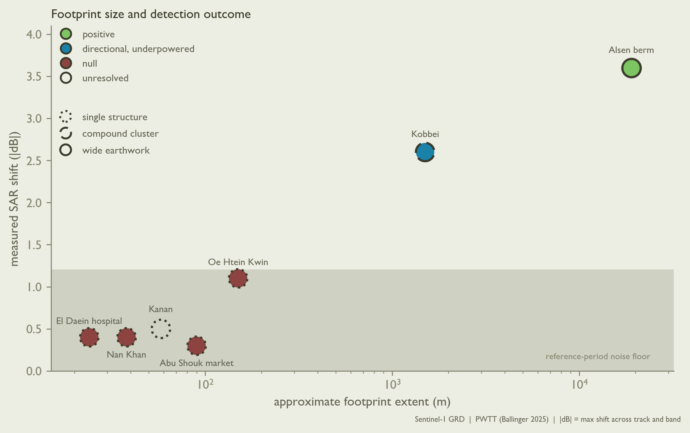

SAR Blindness: Wet Soil, Small Footprints
Executive summary
We sought berms in the desert. The reports said they were there, 31 km of newly-built earthen walls encircling El Fasher city (North Darfur, Sudan). The reports specify the date construction began on the berms (9 May 2025), how long the 22 km “semi-circle” segment took to complete (9 May–19 August 2025), that a gap remains around Al-Salaam IDP camp and that it is shrinking (Yale School of Public Health, Humanitarian Research Lab 2025). The berms help the paramilitary group Rapid Support Forces (RSF) create a “literal kill box” around the city. We aimed two satellite sensors – synthetic aperture radar (SAR; Sentinel-1) and multispectral optical (Sentinel-2) – at El Fasher. At 10 m optical resolution, the berms appear as thin dark lines (Figure 1).

SAR is touted as the gold standard in open-access change-detection (CD), particularly change caused by violence (Ballinger 2025). Combined with access to Very High Resolution (VHR) satellite imagery unavailable to the public, SAR is a centerpiece of CD methods in conflict zones, from Mariupol to Gaza (Dietrich et al. 2025; Ballinger 2025). Distinguishing disrupted earth from desert is surely plausible.
We ran the same underlying SAR data through five different methods: raw differencing, baseline normalization, significance testing, multi-scale resampling, and texture analysis. Only the fifth, the Pixel-Wise T-Test (PWTT) of Ballinger (2025), produced a statistically-defensible positive.
A second case set, Myanmar’s Sagaing Region, retests the footprint problem against three airstrike locations. Two returned nulls. The third was unresolved.
The combined case sets underscore two crucial shortcomings of SAR for CD: - Confounded by soil moisture. When rain changes soil moisture, soil moisture changes what the radar sees. This means recent rain can appear identical to an authentic change event (Wagner 1998; Stanyer et al. 2025). - Lower sensitivity to single-structure damage. SAR needs a wide, contiguous footprint to register CD. Single buildings, however they are constructed, rarely separate from background noise during testing (Aimaiti et al. 2022).
The CD method below relies solely on open Sentinel-1 and Sentinel-2 data. We detail the systematic signal processing and verification problems encountered in implementing this purely sensor-based method.
| # | Country / adm1 / adm2 | AOI | Active-violence window | Violence type | Reference and inference periods / n | SAR reading |
|---|---|---|---|---|---|---|
| 1.1 | Sudan / North Darfur / Al Fasher | Alsen berm crossing, El Fasher | 14–24 Jul 2025 | Berm/earthwork construction | 12 mo pre / 1 mo post; ref_n = 15, inf_n = 5 | VV t = +6.76, df = 4.55, p = 0.0015; VH t = +6.99, df = 8.97, p = 0.0001 |
| 1.2 | Sudan / North Darfur / Al Fasher | Kobbei, El Fasher | 31 Mar–12 Jun 2024 | Arson/razing of compounds | 12 mo pre / 1 mo post; inf_n = 2 | VV t = −3.44, df = 2.2, p = 0.066; VH t = −2.61, df = 1.8, p = 0.132 |
| 1.3 | Sudan / North Darfur / Al Fasher | Naivasha Market, Abu Shouk IDP camp | 30 Aug–10 Sep 2025 | Artillery shelling | 12 mo pre / 1 mo post; inf_n = 2 | VV t = +0.23, df = 3.4, p = 0.832; VH t = +0.42, df = 3.6, p = 0.697 |
| 1.4 | Sudan / East Darfur / Ad Du’ayn | El Daein Teaching Hospital | 20–21 Mar 2026 | Aerial bombing | 8 mo pre / 2 mo post; ref_n = 15, inf_n = 5 | VV t = +0.75, df = 9.4, p = 0.469; VH t = +0.85, df = 9.5, p = 0.416 |
| 2.1 | Myanmar / Sagaing / Tamu | Kanan (church/school/houses) | 7 Jan 2024 | Airstrike | 8 mo pre / 2 mo post; ref_n = 20/18 (ASC/DESC), inf_n = 5/4 | At raster peak: VV t = −2.41/−2.85, p = 0.0414/0.0331; VH ns |
| 2.2 | Myanmar / Sagaing / Kawlin | Nan Khan | 9 Apr 2025 | Airstrike | 8 mo pre / 2 mo post; ref_n = 12/11 (ASC/DESC), inf_n = 4/5 | VV t = −0.84/−0.58, p = 0.4255/0.5757 |
| 2.3 | Myanmar / Sagaing / Shwebo | Oe Htein Kwin school | 12 May 2025 | Airstrike | 8 mo pre / 2 mo post; ref_n = 23/15 (ASC/DESC), inf_n = 5/4 | VV t = +1.40/+1.88, p = 0.2089/0.1261 |
Note. RIWs vary in some cases (12 mo / 1 mo vs. 8 mo / 2 mo) so cases’ image density are roughly equivalent. We used the image density from our only positive CD identification, Alsen’s 12 mo / 1 mo RIW – reference images ≈ 15, inference images ≈ 5 – as a minimum-viable window for producing a positive SAR reading. For example, El Daein (1.4) and the three Myanmar case sites (2.1–2.3) met this ref_n ≈ 15, inf_n ≈ 5 threshold using an 8 mo / 2 mo RIW.
Method
The method below uses only open Sentinel-1 and Sentinel-2 data: no VHR, no in-country contacts, no on-the-ground corroboration. Without those external cross-checks, mistaken readings needed to be caught and corrected in the investigative procedure itself. Each of the six rules corresponds to a specific mistake we made in our case set analyses.
Before you start
1. Test your track for recent image density.
Problem: For the Naivasha market bombardment (1.3), we initially pulled available scenes from 2016 to August 2025 without checking whether the temporal distribution of scenes was skewed. “Skewed” understates the problem: track 65 descending contains 25–31 scenes from 2016 to 2021, followed by a complete gap in 2022–23, and sparse 1–3 annual scenes since 2023.
We only caught this problem when building the reference period, which gave n = 3 SAR scenes total in the 12 months prior to the start of shelling. This scene sparsity left degrees of freedom df = 2: a t-distribution so fat-tailed that even the inference period shift barely cleared p < 0.05. The reference period reading could not be distinguished from background at all.
Solution: We built a standalone check --track-density that runs before any initial data pull. --track-density reports scene count, longest interior gap, and percentage of AOI covered, for the exact AOI and RIW in question. Retrospective calculations for Naivasha’s own track are noted in the above paragraph. If an AOI’s reference period includes fewer than ~10 scenes, or if the reference period contains a data gap over 90 days, stop before running a statistical test.
2. Geocode in three layers. Problem: For the berm waypoints (1.1), our first geocoding pass used Nominatim, the open-access standard for name-to-coordinate search. Nominatim failed to return results for four villages – Golo, Tomnana, Umm Dalil, and Gileidit – named in English as berm waypoints in HRL reports. Rural, village-scale settlements in Sudan are simply not indexed by English-language name. Separately, at El Daein (1.4), OSM recorded exactly one hospital node for the entire town, versus 240 nodes in Khartoum.
Solution: We proactively implemented a three-layer geocoding process to handle thinly indexed placenames:
Overpass raw-tag query for placenames: when a Nominatim placename search returns empty, it triggers an Overpass raw-tag query, more expansive than Nominatim’s indexed search. In 1.1, the Overpass raw-tag layer recovered all four villages’ coordinates missing from Nominatim.
HDX P-code administrative polygons for verifying coordinates: checking geocoded coordinates against HDX-verified polygons guards against a wrong-locality match that a simple name search alone cannot catch, which matters in areas where a single name might simultaneously refer to a territory, city, and village depending on context.
Second independent source for corroborating coordinates: the single hospital node extracted via OSM for El Daein was checked against a Mapcarta open-access coordinate pair for the same-named hospital. The Mapcarta coordinate landed 75 m from the OSM node, independently corroborating what was a thin single source.
Running your tests
3. Never diff raw dates. Problem: At Alsen (1.1), our first SAR test differenced two dates directly, skipping the reference period. This approach produced what appeared to be a positive CD identification: an arbitrary point with no reported feature nearby shows a difference 30x the AOI’s background standard deviation. Were this result in fact corroborated, it would have undoubtedly entered the analysis as a remarkable positive result.
The result was completely confounded by moisture. The scene pair spanned 150 days and 242.5 mm of rainfall, a full wet-season onset. Since raw SAR backscatter is more sensitive to soil moisture than the optical channels used elsewhere in this project (Wagner 1998; Stanyer et al. 2025), the berm’s CD signature was swamped out by seasonal field-to-fallow changes. The 30x difference result was pointed at farmland, not the berm.
Solution: We rebuilt the SAR channel using a multi-image reference distribution (reference_collection). This approach works because many reference scenes give a real estimate of normal variation, not one arbitrarily-timed “before” snapshot that a single rainy week can distort. Rerunning reference_collection on the same 1.1 AOI, the false positive disappeared. The optical-verified berm location, even isolated from this false-positive, returned no signal to the SAR channel. Any raw two-date SAR statistic is insufficient for verification on its own (Figure 2).

4. Check VV/VH divergence first. Problem: Across the razing AOIs (1.2, 1.3), reporting 41 razed farming communities, VV showed a broad decrease over nearly the whole area. Max |z| reached only 1.1. VH stayed flat by comparison. A uniform, AOI-wide VV shift looked like it could be widespread damage. It wasn’t.
What happened was a moisture confound, not scattered razing. The AOI spans a dry-to-wet seasonal transition, and VV is far more sensitive to soil-surface dielectric change than VH. Since authentic structural damage should move VH as well as VV, a VV-only shift is a signature of ambient moisture, not destruction. The broad VV decrease was pointed at seasonal drift, not the 41 reported razing sites.
Solution: VV is sensitive to soil moisture. VH is sensitive to volume scattering, like vegetation canopy or rubble texture. A uniform VV-dominant shift with flat VH points to moisture drift, not damage. Real structural change should move VH too, often more than VV. Check cross-polarization (VH) along with co-polarization (VV) divergences before trusting any raw cluster’s direction.
Verifying your results
5. Test the raster’s peak, not the reported point. Problem: We first tested Alsen (1.1) at its only documented coordinate, the reported village node. The result was null. VV read p = 0.12. VH read p = 0.06. This contradicted an earlier positive finding at the same site.
Our AOIs had drifted. The village node was the only documented coordinate for Alsen, but we had failed to verify the node coordinate matched the coordinates associated with the original positive result. Since PWTT’s own smoothing can shift a sharp peak away from a reported coordinate, the null was pointed at the wrong 150 m circle, instead of evidence disproving the berm signal.
Solution: We computed the T_smoothed raster over a 500 m search radius around the reported point. The real peak sat 480 m away. Testing there instead yielded: VV t = +6.76, p = 0.0015. VH t = +6.99, p = 0.0001. The same drift recurred at El Daein (1.4; 200–280 m) and Kanan (2.1; 453 m). Our default point buffer is 150 m, matching PWTT’s own largest smoothing kernel. Always locate the actual peak first. Widen the buffer only for a disclosed reason, like an unresolved multi-candidate geocode.
6. Visually crosscheck SAR before reporting. Problem: At Shalakhna, our top-ranked SAR coherence cell showed energy_z = +7.3. It looked like the strongest signal in the case. It ended up being a no-data gap at a tile edge, not authentic ground content. At Abu Shouk, a separate cluster read as a bombardment signal.
The cluster, in fact, was a vegetation trend north of the camp, unrelated to the shelling. Since a coherence ratio is unstable wherever both eigenvalues are near zero, a cloud edge, a no-data gap, and an AOI clip boundary all produce the same spuriously high gradient energy an authentic edge does. Neither cell was flagged by cloud classification, so checking that alone would have missed both. The top-ranked cell was pointed at a tile seam, not ground truth.
Solution: We added two AOI-wide gates. A valid-fraction gate excludes cells below 0.95 real pixels, catching cloud and no-data boundaries. An energy z-score gate excludes cells with near-zero gradient energy, where a coherence ratio becomes unstable. Both cases were re-checked by eye against the optical image before either was trusted. Don’t trust a ranked cell or peak without a visual crosscheck first. A statistic can falsely rank a measurement artifact above an authentic signal.
Footprint size predicts detection failure
| # | Site | Footprint | Rainfall (inference period) | SAR result |
|---|---|---|---|---|
| 1.1 | Alsen (berm), Sudan | Wide earthwork (19.3 km) | 105.5 mm | Positive, p < 0.01 (+3.5/+3.7 dB) |
| 1.2 | Kobbei (razing), Sudan | Compound cluster | 37.5 mm | Directional, underpowered (inf_n = 2); combined p = 0.018 |
| 1.3 | Abu Shouk (market bombing), Sudan | Building | 24.3 mm | Null (real cluster = moisture, not damage) |
| 1.4 | El Daein (hospital), Sudan | Single building | 11.4 mm | Null, well-powered (+0.4 dB) |
| 2.1 | Kanan (church/school/houses), Myanmar | Single building | 19.6 mm | Null at reported point; unresolved at peak (453 m off) |
| 2.2 | Nan Khan (houses), Myanmar | Single building | 320.6 mm | Null |
| 2.3 | Oe Htein Kwin (school), Myanmar † | Single building | 330.1 mm | Null |
† The only site with confirmed meteorological denial (an authentic, cloud-fraction-verified monsoon blackout). All other sites present primarily political/access denial mechanisms.
Building footprint size predicted the outcome across all seven sites (Table 2, Figure 3). Alsen and Kobbei (wide-footprint, compound-cluster) presented authentic or borderline-authentic. No single-building footprint was positively detected, regardless of country, actor, or construction type.

Detection floor
Four single-building tests, run at Alsen’s sample sizes (ref_n ≈ 12–23, inf_n ≈ 4–5), produced shifts of 0.3–1.1 dB. El Daein, Nan Khan, and Oe Htein Kwin nulled, while Kanan is unresolved.
A null has two meanings. A test is underpowered when the sample is too small to separate an authentic effect from noise. An authentic change may be present but buried in reference-period scatter, and the null says nothing. It is powered but negative when the measured effect is itself near zero, not just non-significant, suggesting the absence of an effect. The p-value alone does not tell them apart.
These four are the second kind. Alsen, an independently confirmed change run through the same pipeline at the same sample size, shifts 3.5–3.7 dB. A test too weak to catch a shift that size would scatter its estimates around the true value, not push them to near zero at three unrelated sites in two countries. More reference scenes only tighten the noise band. They cannot draw meaning from a near-zero estimate. The limit is footprint size, not sample size.
In your own cases. Match every SAR null to a positive control: an independently confirmed same-type change, using the same analysis pipeline, with a comparable sample size to your target cases. Then judge the target null by its measured shift from the reference-period mean, not its p-value. Near zero and well below the control is an authentic negative. A sizable fraction of the control without significance is underpowered, and more scenes or a wider AOI may help.
Note. Nan Khan’s inference window carried 320.6 mm of rainfall, nearly as much as Oe Htein Kwin’s confirmed-monsoon 330.1 mm; Nan Khan was initially selected as the case set’s dry-season comparison site. Its null could reflect the footprint floor, an authentic moisture confound of its own, or both.
Limitations and open questions
- This project presents SAR calibration evidence for a small positive-control case set (7 tests) with specific soil-moisture and built environment characteristics, rather than a generalizable profile.
- 10 m resolution ceiling in dense fabric. Visual crosscheck at 30 m resolution often cannot resolve a candidate either way.
- Typology confounded with footprint. Kobbei (vernacular, wider) was detected; El Daein (formal, small) was not. The relevant missing test here was for wide-footprint formal construction.
- Resolving Kanan (2.1) requires VHR this project does not use.
- A wider-footprint East Darfur event remains untested.
What this means
Across two case sets, open SAR returned one clear positive from seven events. This low detection rate is a fact about SAR’s limitations at these footprints and sample sizes, not a result about the ground. The investigated events happened. Where open SAR is the only instrument with coverage, its silence is not evidence of absence and must not be treated as such.
Given the soil-moisture and building footprint confounds demonstrated above, two checks are worth doing before using SAR for CD: is optical truly blocked by weather (not just hard to reach) and how big is the damaged area.
Single buildings never show up in this project’s SAR data, no matter their construction. A contiguous 19.3 km earthwork did. If SAR detects nothing, check what it measured: how many images, their distribution between wet and dry seasons, and long temporal gaps in coverage. SAR coverage over much of Sudan, including the capital Khartoum, was blacked out between August 2022 and April 2025, from the end of the ESA’s Sentinel-1B mission to the start of Sentinel-1C. In Sudan in this period, ACLED recorded at least 28,700 people killed and 12 million forcibly displaced. Within the blackout swath, open-access SAR imagery captures exactly zero instances of this violence.
Appendix: Data and parameters
- Platform
- Google Earth Engine, accessed August 2026.
- SAR
-
COPERNICUS/S1_GRD. IW mode, VV + VH, C-band. GEE-provided: border and thermal noise removed, calibrated to σ⁰, terrain-corrected via SRTM. Values in dB. - Optical
-
COPERNICUS/S2_SR_HARMONIZED. - Rainfall
-
UCSB-CHG/CHIRPS/DAILYv2.0. AOI-mean, pass to pass. - Terrain and water
- SRTM 30 m and JRC Global Surface Water.
- Pair selection
- Before and after must share orbit pass (ASC/DESC) and relative orbit (track). A mismatch hard-fails rather than crossing tracks.
- Analysis scale
- 10 m, the S1 GRD nominal.
- Speckle filter
- 5 × 5 square focal median, per scene, before aggregation.
- PWTT
- Welch’s t per orbit × polarization. T = max(|t|). T_smoothed is the mean of T and T convolved at 50, 100, and 150 m with circular kernels.
- Reference and inference windows
- Per case (Table 1). Default 12 mo / 1 mo.
- Point statistics
- 150 m buffer. Centred on the T_smoothed raster peak where rule 5 applies (1.1, 2.1), otherwise on the geocoded point.
Per-case parameters (Table 3). The coordinate is the point at which the statistic in Table 1 was measured, at the buffer shown. Windows follow Table 1: the reference period is the 8 or 12 months ending at the start of the active-violence window, the inference period the 1 or 2 months from its end. El Fasher (1.1–1.3) and El Daein (1.4) have descending-only Sentinel-1 coverage, so T reduces to a single-track |t| there. The Sagaing sites (2.1–2.3) combine one ascending and one descending track.
| # | Tested coordinate (lat, lon) | Buffer | Orbit · relative orbit |
|---|---|---|---|
| 1.1 | 13.653180, 25.242255 (PWTT peak, 480 m from the Alsen village node) | 150 m | descending · 138 |
| 1.2 | 13.878884, 24.897446 (Yale HRL Annex F) | 150 m | descending · 138 |
| 1.3 | 13.671500, 25.350100 (Abu Shouk camp, Naivasha Market) | 150 m | descending · 65 |
| 1.4 | 11.463105, 26.125466 (OSM hospital node; Mapcarta 11.4633, 26.1261 agrees) | 150 m | descending · 65 |
| 2.1 | 23.801313, 94.141196 (PWTT peak, 453 m from the geocoded church) | 150 m | ascending · 143, descending · 4 |
| 2.2 | 23.998392, 95.888142 (Bellingcat geolocation) | 150 m | ascending · 70, descending · 106 |
| 2.3 | 22.650500, 95.208400 (school, between OSM’s Oe Htein Kwin North and South) | 150 m | ascending · 143, descending · 106 |